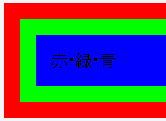
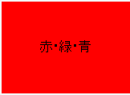

body要素にz-indexプロパティを指定したページでは、body要素の孫要素やより下位の要素の背景指定が無視され、body要素やbody要素の子要素の背景で塗りつぶされてしまう。
<body style="position:relative; z-index:0;"> <div style="padding:1em; background:#f00;"> <div style="padding:1em; background:#0f0;"> <div style="padding:1em; background:#00f;"> 赤・緑・青 </div> </div> </div>
都合により例示はページの先頭にあります。赤、黄緑、青の背景が外側から順に表示されているはずです。
Netscape7.1標準モード
WinIE6.0標準モード
不具合の発生する要素にwidthプロパティやheightプロパティを指定することで不具合を回避することができます。
<div style="padding:1em; background:#f00; width:90%;"> <div style="padding:1em; background:#0f0;"> <div style="padding:1em; background:#00f;"> 赤・緑・青 </div> </div> </div>